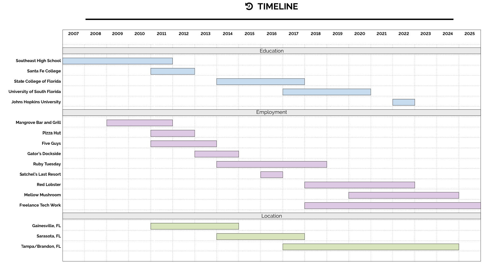

A weak portfolio of selected, ostensibly advanced academic work is online.
You can also download my full, prettier CV as a PDF.
I also want to die, so bad.
almost 俳句?
Florida, USA
(941) 545-5082
austinwmille@gmail.com
GitHub
Below is a visual summary of my education, employment, and location history:
This website is a blend of my professional and personal projects, designed to showcase my skills in various fields. It's an ongoing project that began as a way to practice using AWS and Python for astrophysics-related, data-intensive programming tasks. Over time, I incorporated front-end web development skills, using templates and improving my design through trial and error. You'll find a mix of personal projects, experiments, and technical challenges I’ve worked on--and also a ton of nonsense if you look hard enough.
If you're interested in seeing more, feel free to browse around! I regularly update this site, so check back for new content. You can also contact me through the links provided in the footer for any inquiries, job opportunities, or general mischief.
Mostly I've been exploring the many faces of ChatGPT this year. If you aren't right now, you should be using AI tools almost every day. They are very good.
Anyway, thanks for visiting my website! This space is a semi-professional, statically located public display written by and about myself. It is an ongoing project and not particularly serious. Check back some random time in the future, and also hit me up on social media or whatever. Lastly, an even less professional display of my free time are on my dark pages.
Some skills:
Picking up new skills
Sticking with them
Rating my skills
Travel plans, location updates, current obsessions, and other stuff
Will update soon!
*Note excludes high-paying job offerers
Below is a map of Central-South Florida. It's where I grew up and currently live. It's hot, and I plan on leaving in the next 5 years. I'm working on a plan-- anyway, that's not important. What's more relevant (barely) are the links to my social media accounts which are below the map, at the bottom of this webpage. There you'll find a GitHub trove of broken repos, a totally barren Twitter feed, and a Snapchat QR code which is completely useless if you have my phone number.

...well, thanks for checking out my website. I think that's all I have for now.
If you're here to consider paying me to work for you, well, then you probably shouldn't.
I mean, you couldn't decide and proceeded to read my entire homepage?
What are you even doing? Are you being paid for this?
What sort of company do you work for, even?
Probably a super lame one!
You should send me an email so I can remember never to work for whoever pays you.
For real that must be, like, a terrible company to work for!
Who would ever accept that job?
I'm sure it sucks to work there!
I bet the pay is small too.
Probably has a terrible work-life balance as well.
Sounds awful, honestly.
I hope you find something better.
Just for you, I'll work there instead!
You deserve it.
Take a break.
For real.
Hire me <3.
Happy trails partner